Weighted Correlation¶
This notebook demonstrates the weighted_corr_2d function across a range of replay scenarios — from idealized degenerate cases to more realistic curved and noisy trajectories and finally real data.
The function computes a spatiotemporal correlation from a 3D posterior probability matrix (x, y, time), returning:
- spatiotemporal_corr — overall correlation strength and direction
- x_traj, y_traj — decoded trajectory over time
- slope_x, slope_y — rate of movement in each axis
- mean_x, mean_y — weighted center of mass
import numpy as np
import neuro_py as npy
from neuro_py.ensemble.replay import weighted_corr_2d
import matplotlib.pyplot as plt
import pandas as pd
import nelpy as nel
import matplotlib
import matplotlib.cm as mpl_cm
import matplotlib.colors as colors
Helper: Simulation Functions¶
def simulate_degenerate_x(t_dim=20, x_fixed=5, noise=0.01):
"""All weight on a single x row — trajectory moves only in Y."""
rng = np.random.default_rng(42)
x_dim, y_dim = 10, 10
weights = np.zeros((x_dim, y_dim, t_dim), dtype=np.float64)
for k in range(t_dim):
cy = k / (t_dim - 1) * (y_dim - 1)
for j in range(y_dim):
weights[x_fixed, j, k] = np.exp(-((j - cy) ** 2) / 4.0)
weights[x_fixed] += rng.uniform(0, noise, (y_dim, t_dim))
return weights
def simulate_degenerate_y(t_dim=20, y_fixed=5, noise=0.01):
"""All weight on a single y column — trajectory moves only in X."""
rng = np.random.default_rng(42)
x_dim, y_dim = 10, 10
weights = np.zeros((x_dim, y_dim, t_dim), dtype=np.float64)
for k in range(t_dim):
cx = k / (t_dim - 1) * (x_dim - 1)
for i in range(x_dim):
weights[i, y_fixed, k] = np.exp(-((i - cx) ** 2) / 4.0)
weights[:, y_fixed, :] += rng.uniform(0, noise, (x_dim, t_dim))
return weights
def simulate_no_movement(t_dim=20, noise=0.01):
"""Weight fixed at a single spatial location — no temporal drift."""
rng = np.random.default_rng(42)
x_dim, y_dim = 10, 10
weights = np.zeros((x_dim, y_dim, t_dim), dtype=np.float64)
weights[5, 5, :] = 1.0
weights += rng.uniform(0, noise, (x_dim, y_dim, t_dim))
return weights
def simulate_both_axes(t_dim=20, noise=0.01):
"""Weight drifts diagonally — both X and Y move over time."""
rng = np.random.default_rng(42)
x_dim, y_dim = 10, 10
weights = np.zeros((x_dim, y_dim, t_dim), dtype=np.float64)
for k in range(t_dim):
cx = k / (t_dim - 1) * (x_dim - 1)
cy = k / (t_dim - 1) * (y_dim - 1)
for i in range(x_dim):
for j in range(y_dim):
weights[i, j, k] = np.exp(-((i - cx) ** 2 + (j - cy) ** 2) / 4.0)
weights += rng.uniform(0, noise, weights.shape)
return weights
def simulate_curved(t_dim=20, noise=0.05):
"""Trajectory follows a curved arc (sine wave in Y)."""
rng = np.random.default_rng(42)
x_dim, y_dim = 10, 10
weights = np.zeros((x_dim, y_dim, t_dim), dtype=np.float64)
for k in range(t_dim):
cx = k / (t_dim - 1) * (x_dim - 1)
cy = 4.5 + 4.0 * np.sin(np.pi * k / (t_dim - 1)) # arc from 4.5 -> peak -> 4.5
for i in range(x_dim):
for j in range(y_dim):
weights[i, j, k] = np.exp(-((i - cx) ** 2 + (j - cy) ** 2) / 2.0)
weights += rng.uniform(0, noise, weights.shape)
return weights
def simulate_noisy_linear(t_dim=20, noise=0.15):
"""Linear trajectory with substantial noise — realistic decode uncertainty."""
rng = np.random.default_rng(42)
x_dim, y_dim = 10, 10
weights = np.zeros((x_dim, y_dim, t_dim), dtype=np.float64)
for k in range(t_dim):
cx = k / (t_dim - 1) * (x_dim - 1)
cy = k / (t_dim - 1) * (y_dim - 1)
for i in range(x_dim):
for j in range(y_dim):
weights[i, j, k] = np.exp(-((i - cx) ** 2 + (j - cy) ** 2) / 4.0)
weights += rng.uniform(0, noise, weights.shape)
return weights
def simulate_reverse(t_dim=20, noise=0.01):
"""Trajectory moves from high to low — tests sign of correlation."""
rng = np.random.default_rng(42)
x_dim, y_dim = 10, 10
weights = np.zeros((x_dim, y_dim, t_dim), dtype=np.float64)
for k in range(t_dim):
cx = (x_dim - 1) - k / (t_dim - 1) * (x_dim - 1) # 9 -> 0
cy = (y_dim - 1) - k / (t_dim - 1) * (y_dim - 1) # 9 -> 0
for i in range(x_dim):
for j in range(y_dim):
weights[i, j, k] = np.exp(-((i - cx) ** 2 + (j - cy) ** 2) / 4.0)
weights += rng.uniform(0, noise, weights.shape)
return weights
def simulate_fragmented(t_dim=20, noise=0.05):
"""Weight jumps between two spatial clusters — fragmented/ambiguous replay."""
rng = np.random.default_rng(42)
x_dim, y_dim = 10, 10
weights = np.zeros((x_dim, y_dim, t_dim), dtype=np.float64)
for k in range(t_dim):
# Alternate between two clusters
if k % 4 < 2:
cx, cy = 2.0, 2.0
else:
cx, cy = 7.0, 7.0
for i in range(x_dim):
for j in range(y_dim):
weights[i, j, k] = np.exp(-((i - cx) ** 2 + (j - cy) ** 2) / 2.0)
weights += rng.uniform(0, noise, weights.shape)
return weights
def helper_plot(weights):
fig, ax = plt.subplots(1, weights.shape[2], figsize=(20, 2))
vmax = np.percentile(weights, 99.9)
for i in range(weights.shape[2]):
ax[i].imshow(
weights[..., i].T, origin="lower", aspect="equal", vmin=0, vmax=vmax
)
ax[i].set_title(f"t={i}")
plt.show()
Section 1 — Degenerate Cases¶
These scenarios test the edge cases where movement is confined to a single axis or absent entirely.
1a. Only Y-axis movement (degenerate X)¶
weights = simulate_degenerate_x()
corr, x_traj, y_traj, slope_x, slope_y, mean_x, mean_y = weighted_corr_2d(weights)
print(f"spatiotemporal corr : {corr:.4f} (expect ~0.857, y-axis only)")
print(f"slope_x : {slope_x:.3e} (expect ~0)")
print(f"slope_y : {slope_y:.4f} (expect ~0.41)")
helper_plot(weights)
npy.plotting.plot_2d_replay(weights)
plt.show()
spatiotemporal corr : 0.8567 (expect ~0.857, y-axis only)
slope_x : 3.668e-31 (expect ~0)
slope_y : 0.4141 (expect ~0.41)
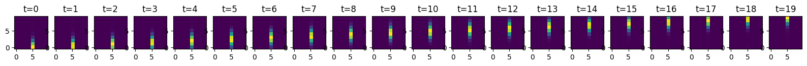
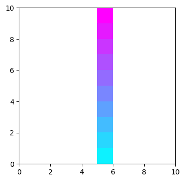
1b. Only X-axis movement (degenerate Y)¶
weights = simulate_degenerate_y()
corr, x_traj, y_traj, slope_x, slope_y, mean_x, mean_y = weighted_corr_2d(weights)
print(f"spatiotemporal corr : {corr:.4f} (expect ~0.857, x-axis only)")
print(f"slope_x : {slope_x:.4f} (expect ~0.41)")
print(f"slope_y : {slope_y:.3e} (expect ~0)")
helper_plot(weights)
npy.plotting.plot_2d_replay(weights)
plt.show()
spatiotemporal corr : 0.8567 (expect ~0.857, x-axis only)
slope_x : 0.4141 (expect ~0.41)
slope_y : 9.090e-32 (expect ~0)
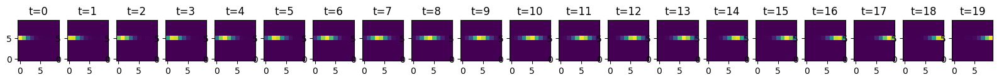
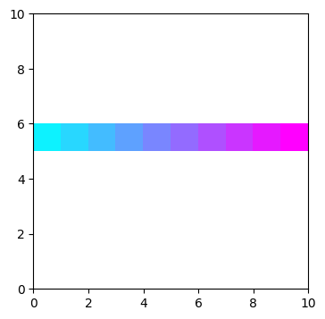
1c. No movement (neither axis)¶
weights = simulate_no_movement()
corr, x_traj, y_traj, slope_x, slope_y, mean_x, mean_y = weighted_corr_2d(weights)
print(f"spatiotemporal corr : {corr:.4f} (expect ~0, no signal)")
print(f"slope_x : {slope_x:.3e}")
print(f"slope_y : {slope_y:.3e}")
helper_plot(weights)
npy.plotting.plot_2d_replay(weights)
plt.show()
spatiotemporal corr : 0.0098 (expect ~0, no signal)
slope_x : 3.799e-03
slope_y : 1.349e-03
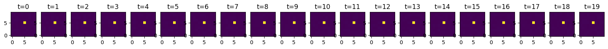
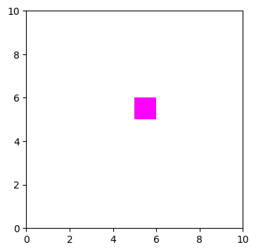
1d. Both axes moving (diagonal)¶
weights = simulate_both_axes()
corr, x_traj, y_traj, slope_x, slope_y, mean_x, mean_y = weighted_corr_2d(weights)
print(f"spatiotemporal corr : {corr:.4f} (expect ~0.81, both axes)")
print(f"slope_x : {slope_x:.4f}")
print(f"slope_y : {slope_y:.4f}")
helper_plot(weights)
npy.plotting.plot_2d_replay(weights)
plt.show()
spatiotemporal corr : 0.8117 (expect ~0.81, both axes)
slope_x : 0.4019
slope_y : 0.4015
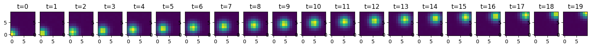
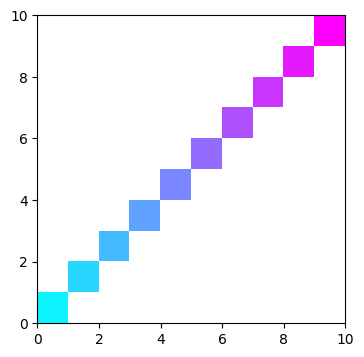
Section 2 — Realistic Scenarios¶
Real decoded posteriors are rarely perfectly linear — they contain noise, curvature, and ambiguity. These scenarios test how weighted_corr_2d behaves under more naturalistic conditions.
2a. Curved trajectory (sine arc)¶
The center of mass follows a smooth arc in Y while sweeping across X. Since weighted_corr_2d fits a linear model, the correlation will be attenuated relative to a straight-line trajectory — the function captures the dominant linear trend.
weights = simulate_curved()
corr, x_traj, y_traj, slope_x, slope_y, mean_x, mean_y = weighted_corr_2d(weights)
print(f"spatiotemporal corr : {corr:.4f} (attenuated vs diagonal — nonlinear Y)")
print(f"slope_x : {slope_x:.4f} (X is still linear)")
print(f"slope_y : {slope_y:.4f} (near 0 — arc cancels out)")
helper_plot(weights)
npy.plotting.plot_2d_replay(weights)
plt.show()
spatiotemporal corr : 0.4520 (attenuated vs diagonal — nonlinear Y)
slope_x : 0.3096 (X is still linear)
slope_y : 0.0004 (near 0 — arc cancels out)
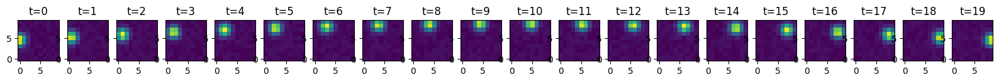

2b. Noisy linear trajectory¶
A diagonal trajectory with substantial decode uncertainty. This is the most common real-data scenario — the signal is present but diluted by diffuse posteriors.
weights = simulate_noisy_linear(noise=0.50)
corr, x_traj, y_traj, slope_x, slope_y, mean_x, mean_y = weighted_corr_2d(weights)
print(f"spatiotemporal corr : {corr:.4f} (lower than clean diagonal due to noise)")
print(f"slope_x : {slope_x:.4f}")
print(f"slope_y : {slope_y:.4f}")
helper_plot(weights)
npy.plotting.plot_2d_replay(weights)
plt.show()
spatiotemporal corr : 0.2262 (lower than clean diagonal due to noise)
slope_x : 0.1147
slope_y : 0.1093
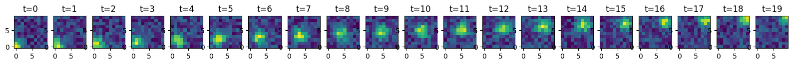

2c. Reverse trajectory¶
Movement from high to low coordinates. Tests that spatiotemporal_corr correctly returns a negative value when the trajectory is reversed relative to time.
weights = simulate_reverse()
corr, x_traj, y_traj, slope_x, slope_y, mean_x, mean_y = weighted_corr_2d(weights)
print(f"spatiotemporal corr : {corr:.4f} (expect negative — reverse direction)")
print(f"slope_x : {slope_x:.4f} (negative slope)")
print(f"slope_y : {slope_y:.4f} (negative slope)")
helper_plot(weights)
npy.plotting.plot_2d_replay(weights)
plt.show()
spatiotemporal corr : -0.8098 (expect negative — reverse direction)
slope_x : -0.4005 (negative slope)
slope_y : -0.4009 (negative slope)
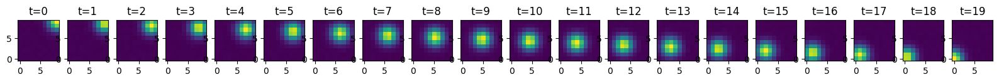
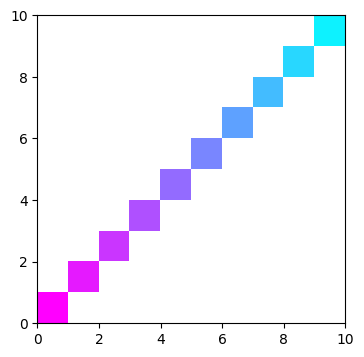
2d. Fragmented replay¶
The posterior alternates between two distant spatial clusters. This mimics ambiguous or multi-path replay. The linear fit will produce a moderate correlation even though the true trajectory is not smooth — a known limitation of the weighted correlation approach.
weights = simulate_fragmented()
corr, x_traj, y_traj, slope_x, slope_y, mean_x, mean_y = weighted_corr_2d(weights)
print(f"spatiotemporal corr : {corr:.4f} (moderate — linear fit across two clusters)")
print(f"slope_x : {slope_x:.4f}")
print(f"slope_y : {slope_y:.4f}")
helper_plot(weights)
npy.plotting.plot_2d_replay(weights)
plt.show()
spatiotemporal corr : 0.1173 (moderate — linear fit across two clusters)
slope_x : 0.0565
slope_y : 0.0544
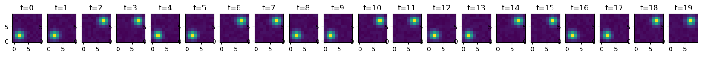

Real data¶
# SET UP PARAMETERS FOR REAL DATA
MIN_RIP_DUR = 0.04 # minimum duration of ripple events to include in analysis (exclude short events that may reflect noise/artifacts)
MAX_RIP_DUR = 0.3 # maximum duration of ripple events to include in analysis (exclude long events that may reflect different phenomena)
N_ACTIVE_CELLS = (
10 # minimum number of active cells in a ripple event to be included in analysis
)
POST_SLEEP_IDX = 3 # which post task is the example event in?
TASK_EPOCH = 2 # which post task is the example event in?
SPEED_THRES = 10 # running threshold to determine tuning curves
S_BINSIZE = 2 # spatial bins in tuning curve
TUNING_CURVE_SIGMA = 3
SLIDE_BY = 0.005
BIN_SIZE = 0.02
basepath = r"R:\data\latentseq\RM10\rm10_day6_20250810"
st, cm = npy.io.load_spikes(
basepath, brainRegion="CA1", putativeCellType="Pyr|Int", remove_unstable=True
)
# load position and compute speed
position = npy.io.load_animal_behavior(basepath)
pos = nel.AnalogSignalArray(
[position.x.values, position.y.values], timestamps=position.timestamps.values
)
speed = nel.utils.ddt_asa(pos, smooth=True, sigma=0.250, norm=True)
# load epochs and ripple events
epoch_df = npy.io.load_epoch(basepath)
beh_epochs = nel.EpochArray(epoch_df[["startTime", "stopTime"]].values)
ripples = npy.io.load_ripples_events(basepath, return_epoch_array=True)
# ripples are at least X seconds long
ripples = nel.EpochArray(
ripples.data[(ripples.lengths >= MIN_RIP_DUR) & (ripples.lengths <= MAX_RIP_DUR)],
)
# ripples have at least X active cells
bst = npy.process.count_in_interval(st.data, ripples.starts, ripples.stops)
ripples = nel.EpochArray(
ripples.data[(bst > 0).sum(axis=0) > N_ACTIVE_CELLS],
)
st, display(epoch_df)
WARNING:root:fs was not specified, so we try to estimate it from the data...
WARNING:root:fs was estimated to be 40.00000000058208 Hz
WARNING:root:creating support from abscissa_vals and sampling rate, fs!
WARNING:root:'fs' has been deprecated; use 'step' instead
WARNING:root:some steps in the data are smaller than the requested step size.
| name | startTime | stopTime | environment | manipulation | behavioralParadigm | stimuli | notes | basepath | |
|---|---|---|---|---|---|---|---|---|---|
| 0 | rm10_probe_250810_092719 | 0.0000 | 452.65915 | cheeseboard | NaN | NaN | NaN | NaN | R:\data\latentseq\RM10\rm10_day6_20250810 |
| 1 | rm10_presleep_250810_094149 | 452.6592 | 6206.85435 | sleep | NaN | NaN | NaN | NaN | R:\data\latentseq\RM10\rm10_day6_20250810 |
| 2 | rm10_cheeseboard1_250810_112435 | 6206.8544 | 8223.35355 | cheeseboard | NaN | NaN | NaN | NaN | R:\data\latentseq\RM10\rm10_day6_20250810 |
| 3 | rm10_postsleep1_250810_120316 | 8223.3536 | 13941.93075 | sleep | NaN | NaN | NaN | NaN | R:\data\latentseq\RM10\rm10_day6_20250810 |
| 4 | rm10_cheeseboard2_250810_134434 | 13941.9308 | 16500.15795 | cheeseboard | NaN | NaN | NaN | NaN | R:\data\latentseq\RM10\rm10_day6_20250810 |
| 5 | rm10_postsleep2_250810_143203 | 16500.1580 | 22562.22515 | sleep | NaN | NaN | NaN | NaN | R:\data\latentseq\RM10\rm10_day6_20250810 |
(<SpikeTrainArray at 0x2affa5d2650: 228 units> at 20000 Hz, None)
compute spatial tuning curves¶
spatial_maps = npy.tuning.SpatialMap(
pos[beh_epochs[TASK_EPOCH]],
st[beh_epochs[TASK_EPOCH]],
s_binsize=S_BINSIZE,
speed=speed,
speed_thres=SPEED_THRES,
tuning_curve_sigma=TUNING_CURVE_SIGMA,
)
WARNING:root:ignoring signal outside of support
WARNING:root:ignoring events outside of eventarray support
WARNING:root:ignoring events outside of eventarray support
WARNING:root:ignoring signal outside of support
decode and score replays¶
- Note: Here we are not shuffling anything; this is just to demonstrate the function on real data. In practice you would want to compare these scores to a shuffle distribution to determine significance.
def jump_distance(posterior):
# if single time bin return nan
if posterior.shape[2] == 1:
return np.nan, np.nan
com = npy.ensemble.position_estimator(
posterior.T,
np.arange(posterior.shape[1]),
np.arange(posterior.shape[0]),
method="com",
)
# get spatial diff over time bins
x_diff = np.diff(com[:, 0])
y_diff = np.diff(com[:, 1])
delta = np.sqrt(x_diff**2 + y_diff**2)
max_jump = np.max(np.abs(delta))
jump = np.sum(np.abs(delta)) / len(delta)
return max_jump, jump
# replays from task
current_replays = ripples[beh_epochs[TASK_EPOCH]]
bin_edges = npy.process.intervals.get_overlapping_intervals(
current_replays.start - BIN_SIZE,
current_replays.stop + BIN_SIZE,
BIN_SIZE,
SLIDE_BY,
)
bin_centers = np.mean(bin_edges, axis=1)
bst = npy.process.count_in_interval(
st.data,
bin_edges[:, 0],
bin_edges[:, 1],
)
# find which bin belongs to which ripple
within_ripple_idx, within_ripple_ind = npy.process.in_intervals(
bin_centers, current_replays.data, return_interval=True
)
ripple_index = within_ripple_ind[within_ripple_idx]
unique_ripples = np.unique(ripple_index).astype(int)
# remake current_replays in case of non unique ripples
current_replays = nel.EpochArray(current_replays.data[unique_ripples, :])
# decode replays
posterior_prob = npy.ensemble.decoding.bayesian.decode_with_prior_fallback(
bst[:, within_ripple_idx].T,
spatial_maps.ratemap.T,
spatial_maps.occupancy.T,
BIN_SIZE,
uniform_prior=True,
).T
good_time_bins = np.sum(bst[:, within_ripple_idx], axis=0) > 0
max_jump = []
jump = []
weighted_corr = []
slope_x = []
slope_y = []
mean_x = []
mean_y = []
for rid in unique_ripples:
posterior_ripple = posterior_prob[:, :, ripple_index == rid]
current_ripple_idx = ripple_index == rid
max_jump_, jump_ = jump_distance(
posterior_ripple[..., good_time_bins[current_ripple_idx]]
)
(
weighted_correlation_coefficient,
x_trajectory,
y_trajectory,
slope_x_,
slope_y_,
mean_x_,
mean_y_,
) = npy.ensemble.weighted_corr_2d(
posterior_ripple,
x_coords=spatial_maps.xbin_centers,
y_coords=spatial_maps.ybin_centers,
time_coords=np.arange(posterior_ripple.shape[2]) * SLIDE_BY,
)
max_jump.append(max_jump_)
jump.append(jump_)
weighted_corr.append(weighted_correlation_coefficient)
slope_x.append(slope_x_)
slope_y.append(slope_y_)
mean_x.append(mean_x_)
mean_y.append(mean_y_)
weighted_corr = np.array(weighted_corr)
jump = np.array(jump) * S_BINSIZE
max_jump = np.array(max_jump) * S_BINSIZE
slope_x = np.array(slope_x)
slope_y = np.array(slope_y)
mean_x = np.array(mean_x)
mean_y = np.array(mean_y)
package into dataframe for later saving and analysis¶
potential_replays = pd.DataFrame()
potential_replays["ripple_index"] = unique_ripples
potential_replays["weighted_corr"] = weighted_corr
potential_replays["weighted_corr_abs"] = np.abs(weighted_corr)
potential_replays["jump"] = jump
potential_replays["max_jump"] = max_jump
potential_replays["slope_x"] = slope_x
potential_replays["slope_y"] = slope_y
potential_replays["mean_x"] = mean_x
potential_replays["mean_y"] = mean_y
potential_replays.query("jump < 12").sort_values("weighted_corr_abs", ascending=False)
| ripple_index | weighted_corr | weighted_corr_abs | jump | max_jump | slope_x | slope_y | mean_x | mean_y | |
|---|---|---|---|---|---|---|---|---|---|
| 155 | 155 | -0.912965 | 0.912965 | 5.048513 | 26.450355 | 497.622576 | -735.002205 | 48.925101 | 73.781679 |
| 182 | 182 | -0.906190 | 0.906190 | 5.836934 | 53.620001 | -1292.102394 | -463.456814 | 111.743988 | 81.464158 |
| 615 | 615 | -0.905749 | 0.905749 | 2.325517 | 6.799726 | 307.902075 | -447.962559 | 54.511916 | 65.698982 |
| 309 | 309 | 0.888116 | 0.888116 | 5.755355 | 35.515835 | -933.704765 | 769.558976 | 103.065618 | 109.256980 |
| 518 | 518 | -0.863428 | 0.863428 | 3.382480 | 18.033893 | 440.020776 | -647.446706 | 55.130015 | 65.516742 |
| ... | ... | ... | ... | ... | ... | ... | ... | ... | ... |
| 392 | 392 | 0.041132 | 0.041132 | 4.208392 | 14.650454 | 15.394767 | 26.622957 | 125.622804 | 88.886318 |
| 244 | 244 | -0.039981 | 0.039981 | 9.985856 | 25.520723 | 52.566586 | -48.227792 | 156.648520 | 93.369748 |
| 159 | 159 | 0.039813 | 0.039813 | 4.430573 | 17.412706 | -17.686837 | 20.846424 | 149.691172 | 98.973949 |
| 43 | 43 | -0.039685 | 0.039685 | 5.420109 | 18.517353 | 13.712769 | -12.811157 | 157.386250 | 95.613318 |
| 0 | 0 | 0.038025 | 0.038025 | 10.717918 | 33.926206 | 75.253357 | -35.375930 | 77.835648 | 89.537228 |
265 rows × 9 columns
plot potential replays and fit lines¶
from mpl_toolkits.axes_grid1.inset_locator import inset_axes
npy.plotting.set_plotting_defaults()
x, y = pos[beh_epochs[TASK_EPOCH]].data
fig, ax = plt.subplots(
5, 5, figsize=npy.plotting.set_size("nature_double", fraction=1.5, ratio=1), dpi=200
)
ax = ax.flatten()
ripple_index_potential = (
potential_replays.query("jump < 12")
.sort_values("weighted_corr_abs", ascending=False)
.ripple_index.values
)
for i, rid in enumerate(ripple_index_potential[:25]):
posterior_ripple = posterior_prob[:, :, ripple_index == rid]
ax[i].plot(x, y, color="k", alpha=0.25, zorder=2)
npy.plotting.plot_2d_replay(
posterior_ripple,
extent=[
spatial_maps.bins[0][0],
spatial_maps.bins[0][-1],
spatial_maps.bins[1][0],
spatial_maps.bins[1][-1],
],
saturation=5,
ax=ax[i],
)
# plot fit line
t = np.arange(posterior_ripple.shape[2], dtype=float) * SLIDE_BY
t_centered = t - t.mean()
x_fit = mean_x[rid] + slope_x[rid] * t_centered
y_fit = mean_y[rid] + slope_y[rid] * t_centered
ax[i].plot(x_fit, y_fit, color="cyan", lw=1.25, zorder=4)
ax[i].set_title(
f"corr: {weighted_corr[rid]:.2f}\n avg. jump: {jump[rid]:.2f}\nmax jump: {max_jump[rid]:.2f}",
fontsize=5,
)
# Colorbar
cmap = matplotlib.colormaps.get_cmap("cool").resampled(posterior_prob.shape[2])
norm = colors.Normalize(vmin=0, vmax=posterior_ripple.shape[2] * SLIDE_BY)
sm = mpl_cm.ScalarMappable(norm=norm, cmap=cmap)
sm.set_array([])
cax = inset_axes(ax[i], width="30%", height="3%", loc="lower right", borderpad=2)
cbar = plt.colorbar(sm, cax=cax, orientation="horizontal")
cax.xaxis.set_label_position("bottom")
cax.set_xlabel("Elapsed time (s)", fontsize=5, labelpad=2)
cbar.ax.tick_params(labelsize=4)
ax[i].axis("off")
plt.show()
WARNING:root:ignoring signal outside of support
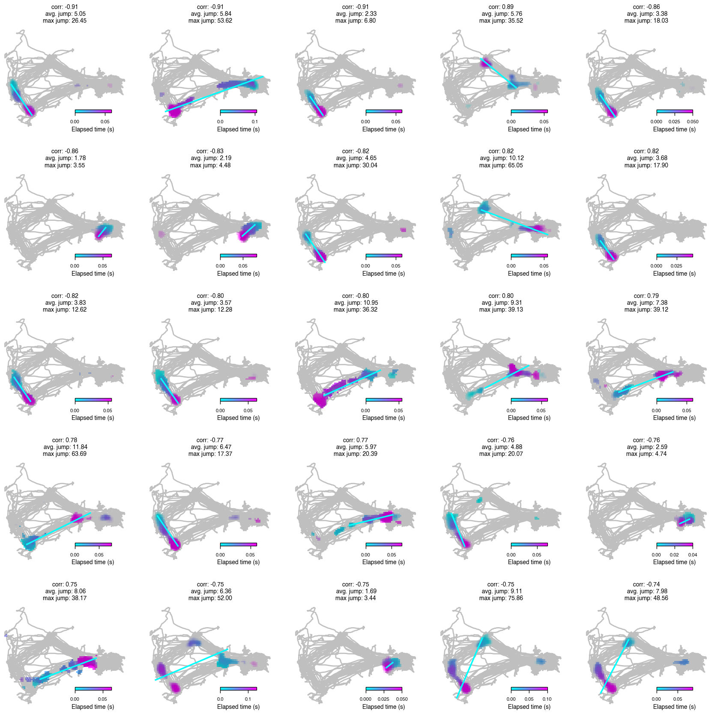
Summary¶
| Scenario | Expected corr | Notes |
|---|---|---|
| Only Y moves | ~+0.86 | corr_x degenerate, corr_y only |
| Only X moves | ~+0.86 | corr_y degenerate, corr_x only |
| No movement | ~0 | noise floor |
| Both axes (diagonal) | ~+0.81 | RMS of corr_x and corr_y |
| Curved arc | attenuated | nonlinear Y cancels in linear fit |
| Noisy linear | moderate | signal diluted by decode uncertainty |
| Reverse diagonal | negative | sign correctly flipped |
| Fragmented | moderate | linear fit spans two clusters |